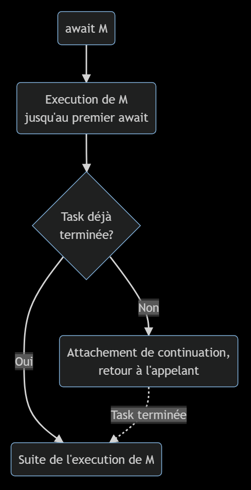
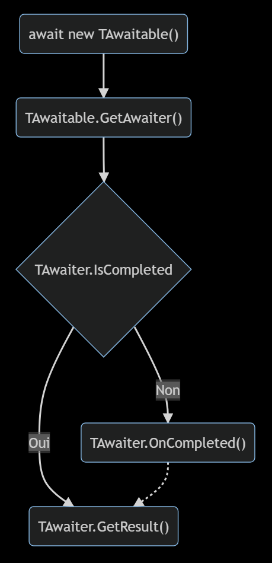

[INSERT SPONSORS HERE]
## Dissection de async/await _Philippe Vlérick_ 
## Introduction Note: Qui utilise asyc/await quotidiennement? Qui a déjà écit du code asynchrone sans async/await?
### Le code asynchrone ~~c'est~~ c'était... - difficile à écrire <!-- .element: class="fragment" --> - difficile à lire <!-- .element: class="fragment" --> - souvent incorrect <!-- .element: class="fragment" --> - ne parlons même pas des exceptions <!-- .element: class="fragment" --> - ... pénible <!-- .element: class="fragment" -->
### <code>async</code>/<code>await</code> - tente de palier à ces problèmes <!-- .element: class="fragment" --> - permet du code plus familier <!-- .element: class="fragment" --> - sont devenus omniprésents <!-- .element: class="fragment" --> Note: Async/await tente d'apporter une solution afin de permettre l'écriture de code exprimant une intention claire ASP.NET Core => async partout Tout dévelopeur C# est ammené à écrire await plusieurs fois par jour
### Que va-t-on faire? - Voir la théorie <!-- .element: class="fragment" --> - Écrire un peu de code <!-- .element: class="fragment" --> - Regarder sous le capot <!-- .element: class="fragment" --> - le code géneré par le compilateur <!-- .element: class="fragment" -->
### Pourquoi? - Meilleur compréhension <!-- .element: class="fragment" -->
## Démo 1 #### Mise en place
### Observations - <!-- .element: class="fragment" --> pas de <code>callback</code> ou d'<code>event</code> - <!-- .element: class="fragment" --> structure de code familière - <!-- .element: class="fragment" --> ressemble a du code bloquant Note: Le code ressemble à du code bloquant, le seul gain est dans la performance Du point de vue du dévelopeur, la méthode est en "pause" jusqu'a l'obtention du résultat
### Points d'attention - <!-- .element: class="fragment" --> <code>GetQuote</code> renvoie une <code>Task</code><<code>string</code>> - <!-- .element: class="fragment" --> une tâche qui produira une <code>string</code> - <!-- .element: class="fragment" --> <code>Call Stack</code> après le premier <code>await</code> - <!-- .element: class="fragment" --> il y a bien eu un callback (ou continuation)
## Démo 2 #### Découpe entre appel et <code>await</code>
### Observations - <!-- .element: class="fragment" --> appel à <code>GetQuote</code> découplé de l'attente du résultat - <!-- .element: class="fragment" --> <code>await</code> suspend l'execution du code en attendant la fin d'une opération - <!-- .element: class="fragment" --> sans bloquer le <code>thread</code> Note: await est équivalent à dire "j'ai été aussi loin que le pouvais, à présent j'ai besoin du résultat pour continuer"
## Evaluation de <code>await</code>
 Note: L'execution sera synchrone tnat qu'il n'y a pas un réel besoin d'attendre Retour à l'appelant != methode execution terminée!
### Observations - <!-- .element: class="fragment" --> synchrone jusqu'au <em>réel</em> besoin d'attendre - <!-- .element: class="fragment" --> retour à l'appelant ≠ méthode terminée
## Le pattern <code>awaitable</code> #### Codification d'une operation asynchrone
### <code>TAwaitable</code> Pour supporter <code>await</code> sur un type, il faut - <!-- .element: class="fragment" --> une méthode <code>TAwaiter GetAwaiter()</code> - <!-- .element: class="fragment" --> instance ou extension, peu importe
### <code>TAwaiter</code> Le être valable, il doit à son tour - <!-- .element: class="fragment" --> implémenter <code>INotifyCompletion</code> - <!-- .element: class="fragment" --> <code>void OnCompleted(Action continuation);</code> - <!-- .element: class="fragment" --> avoir une propriété <code>bool IsCompleted</code> - <!-- .element: class="fragment" --> avoir une méthode <code>TResult GetResult()</code> - <!-- .element: class="fragment" --> <code>TResult</code> est la valeur attendue (ex: <code>string</code>) ou <code>void</code>
<pre> <code data-trim data-noescape> public class Awaitable { public Awaiter GetAwaiter() => new(); } public class Awaiter : INotifyCompletion { public bool IsCompleted { get; } public void GetResult() { } public void OnCompleted(Action continuation) { } } </code> </pre>

## Démo 3 #### <code>Awaitable & Awaiter</code>
### Observations - <!-- .element: class="fragment" --> appel synchrone si <code>Awaiter.IsCompleted</code>
## Démo 4 #### <code>Awaitable & Awaiter</code>
### Observations - <!-- .element: class="fragment" --> appel asynchrone si <code>!Awaiter.IsCompleted</code> - <!-- .element: class="fragment" --> tout ce qui est après le <code>await</code> est la continuation
## Récapitulatif
- <!-- .element: class="fragment" --> une méthode <code>async</code> rencontre un <code>await</code> - <!-- .element: class="fragment" --> si l'opération est terminée: elle continue de manière synchrone - <!-- .element: class="fragment" --> si l'opération n'est pas finie: - <!-- .element: class="fragment" --> tout le code après est passé comme continuation - <!-- .element: class="fragment" --> l'execution retourne à l'appelant
## <code>IAsyncStateMachine</code> #### Le coeur de la machinerie
<pre> <code data-trim data-noescape> static async Task Main(string[] args) { var client = new HttpClient(); var quote = await client.GetStringAsync("http://localhost:8080/"); Console.WriteLine(quote); } </code> </pre>
<pre> <code data-trim data-noescape> [AsyncStateMachine(typeof(<Main>d__0))] [DebuggerStepThrough] private static Task Main(string[] args) { <Main>d__0 stateMachine = new <Main>d__0(); stateMachine.<>t__builder = AsyncTaskMethodBuilder.Create(); stateMachine.args = args; stateMachine.<>1__state = -1; stateMachine.<>t__builder.Start(ref stateMachine); return stateMachine.<>t__builder.Task; } </code> </pre>
<pre> <code data-trim data-noescape> [CompilerGenerated] private sealed class <Main>d__0 : IAsyncStateMachine { public int <>1__state; public AsyncTaskMethodBuilder <>t__builder; public string[] args; private HttpClient <client>5__1; private string <quote>5__2; private string <>s__3; private TaskAwaiter<string> <>u__1; private void MoveNext() { ... } [DebuggerHidden] private void SetStateMachine(IAsyncStateMachine stateMachine) { } } </code> </pre>
<pre> <code data-trim data-noescape> public int <>1__state; </code> </pre> - <!-- .element: class="fragment" --> -1 : pas démarré ou en cours - <!-- .element: class="fragment" --> -2 : fini - <!-- .element: class="fragment" --> autre : en attente
<pre> <code data-trim data-noescape> public AsyncTaskMethodBuilder <>t__builder; </code> </pre> Ancrage avec les types de l'infrastructure <code>async</code> - <!-- .element: class="fragment" --> propagation de succès ou de l'échec - <!-- .element: class="fragment" --> gestion de l'attente
<pre> <code data-trim data-noescape> public string[] args; private HttpClient <client>5__1; private string <quote>5__2; private string <>s__3; </code> </pre> - <!-- .element: class="fragment" --> les paramètres de la méthode - <!-- .element: class="fragment" --> des variables pour conserver l'état
<pre> <code data-trim data-noescape> private TaskAwaiter<string> <>u__1; </code> </pre> l'<code>awaiter</code> utilisé dans <code>MoveNext()</code>
### MoveNext() Ne tient pas sur un slide...
## Conclusions
### Ce n'est pas si compliqué! - <!-- .element: class="fragment" --> le code décompilé fait un peu mal aux yeux - <!-- .element: class="fragment" --> mais il n'est pas complètement illisible
### Les grands absents... - <!-- .element: class="fragment" -->gestion des erreurs - <!-- .element: class="fragment" --><code>SynchronizationContext</code>